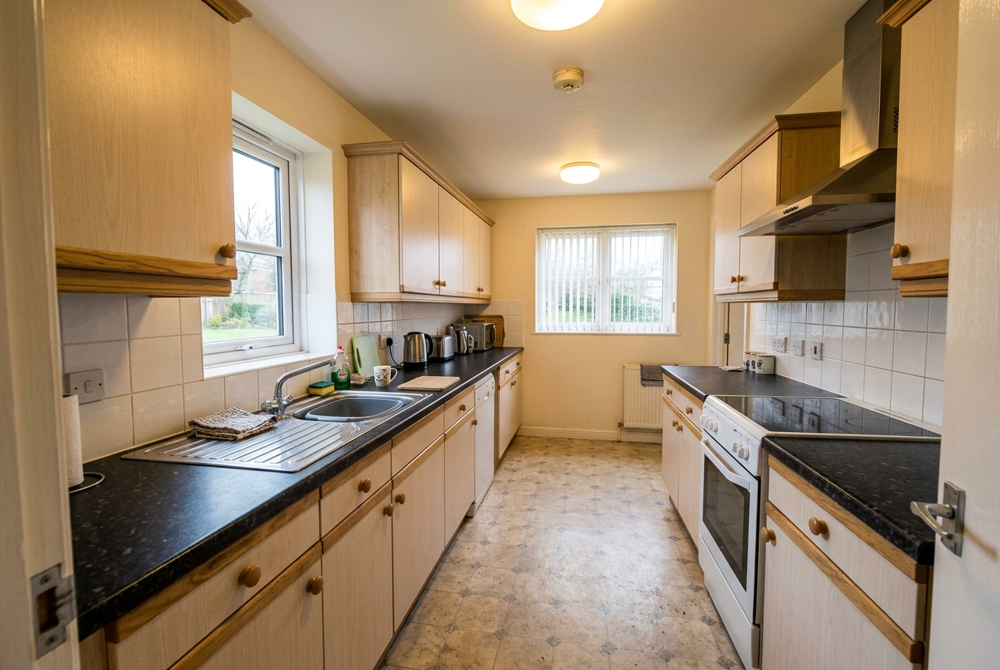

RP-001 · A-wide
development Google / Antigravity built-in image generator
Status: review_pending
Requested manifest (6)
kitchen units, dark worktop, sink, oven, induction hob, extractor hood
Observed labels (0)
Not reviewed
Verified negatives (0)
Not reviewed
Exact prompt
Create one photorealistic landscape photograph that looks like an ordinary smartphone capture of a kitchen in a modest 1990s UK flat with dated but maintained fittings. This is view A-wide: standing at the doorway; wide establishing view. Visible evidence required in this view: kitchen units, dark worktop, sink, oven, induction hob, extractor hood. Intended visible defects: none. Negative controls: wood grain is not mould; no cracked tiles. The room is mildly cluttered but clean under overcast daylight mixed with warm ceiling lights. Across views preserve: same pale units, dark worktop, appliance positions and window across all four views. Avoid: people, logos, readable text, watermark, impossible geometry, extra doors or windows. Do not add labels, captions, borders, or inspection annotations. Show only visually supportable property evidence; do not make hidden areas visible.